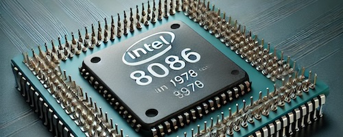

1968
Intel Founded

Robert Noyce and Gordon Moore rename the newly formed company NM Electronics to Intel Corporation, laying the foundation for decades of technological innovation.
Explore Intel's journey through time and discover how innovation has helped shape a more sustainable future for technology and our planet.
Robert Noyce and Gordon Moore rename the newly formed company NM Electronics to Intel Corporation, laying the foundation for decades of technological innovation.

Intel debuts the 4004, the world's first commercial microprocessor, helping launch the microprocessor revolution.

Intel launches the 8086 processor, establishing the x86 architecture used by generations of computers.

Intel introduces the 386 processor with 32-bit architecture, improving performance and multitasking for personal computers.
Intel later invests in renewable energy, chemical abatement, and more efficient manufacturing to reduce emissions.
Intel launches its RISE strategy and 2030 goals focused on climate action, water stewardship, waste reduction, and positive impact.
Intel announces its commitment to achieve net-zero greenhouse gas emissions across global operations by 2040.
Intel reaches 99% renewable electricity usage worldwide, supporting its long-term sustainability goals.
Intel hosts its first Sustainability Summit, bringing together suppliers, government officials, and industry leaders.
Scroll to view timeline • Hover over cards to learn more
Intel continues developing technology while working to reduce the environmental impact of its operations.
Learn MoreIntel invests in renewable electricity, water conservation, and more efficient manufacturing practices.
Learn MoreIntel works to reduce waste and improve reuse and recycling across its operations.
Learn More